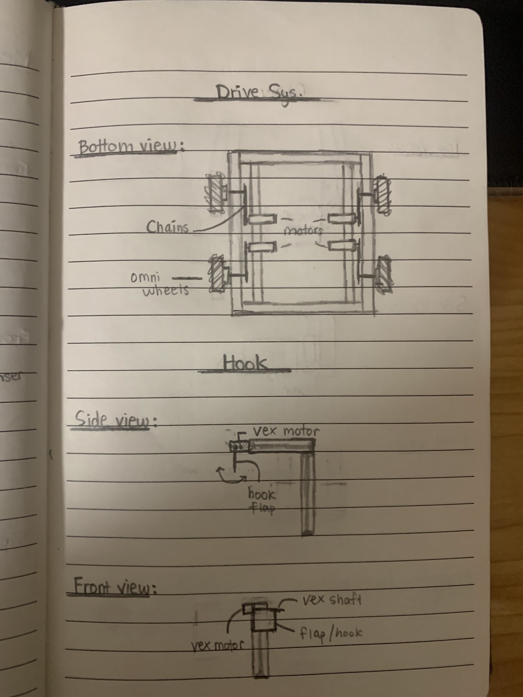
 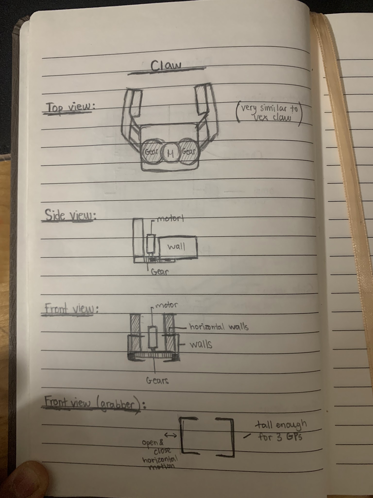
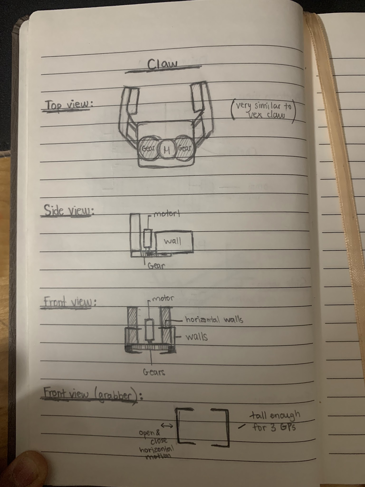
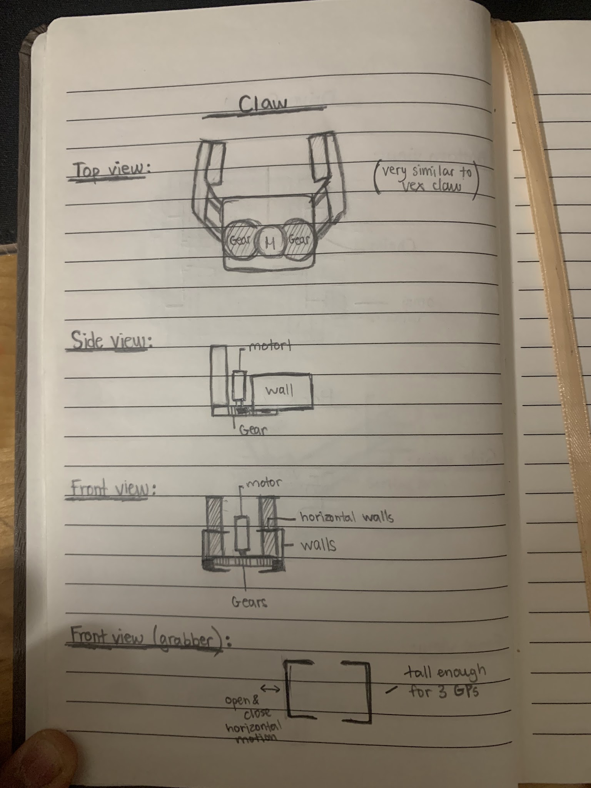


Building The Base & Adding Rive Motors
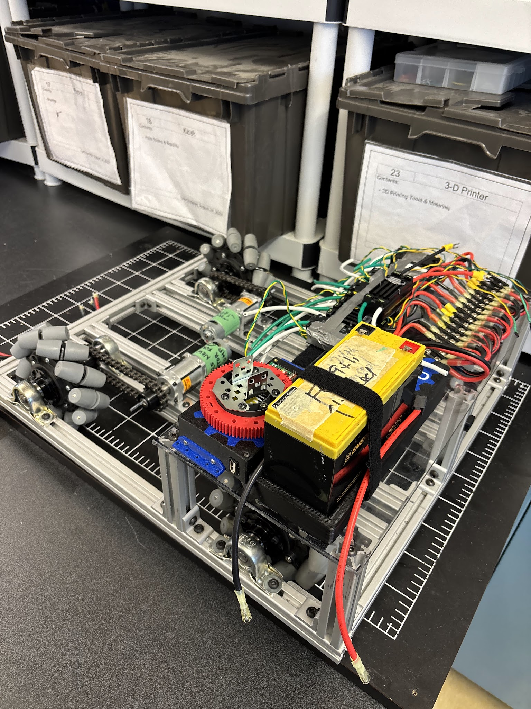
BaneBot Motors Issue
Our first obstacle was with the mounting and the placement of our BaneBot motors for the drive system due to a reduced robot dimensions compared to previous years, as each motor would take up to much space for a direct drive system. Our first thought was to try to extend the base to the maximum robot dimensions possible, but it was not enough to solve the problem. We then came up with the idea to misplace the motor along the frame and use chain drive to keep the same power and speed as a direct drive system.
 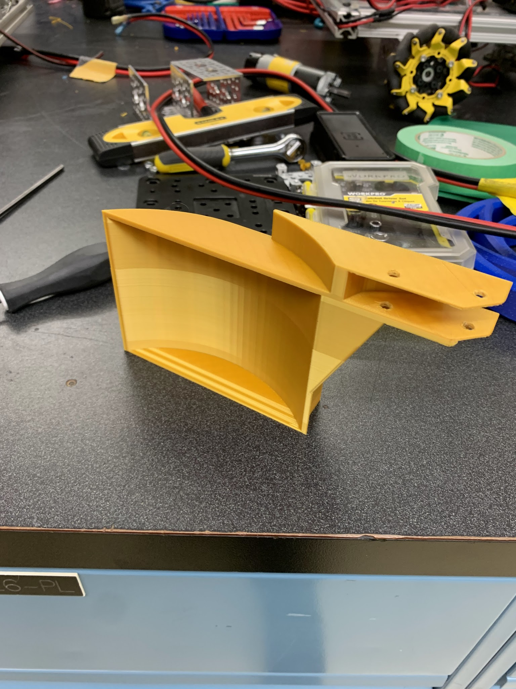
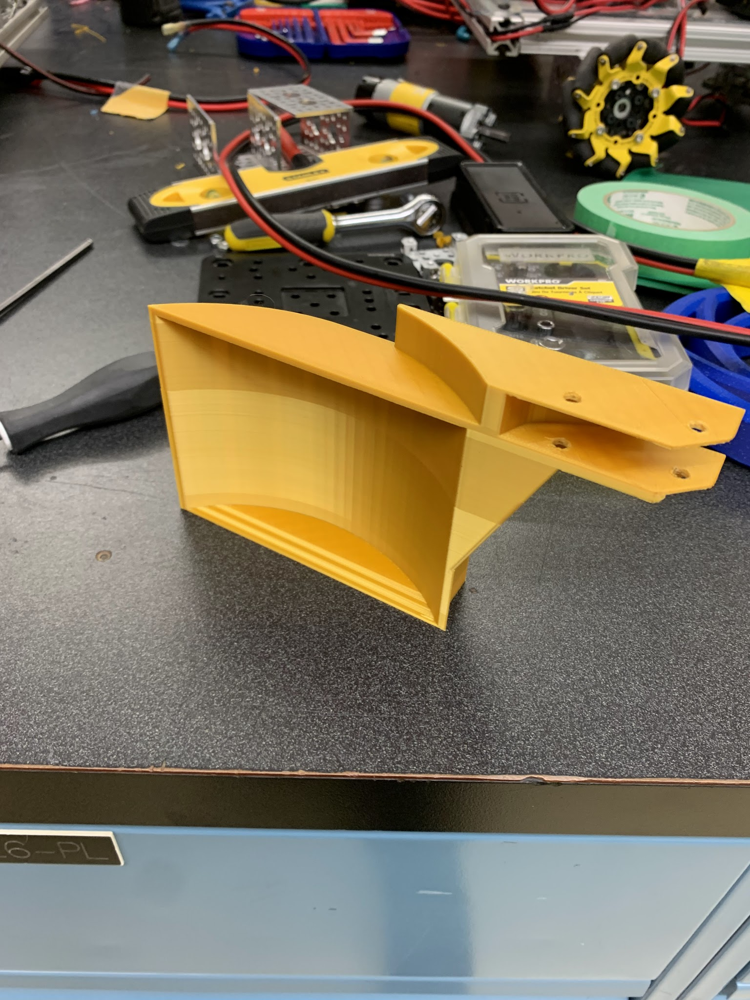

Building The Pickup & Claw System
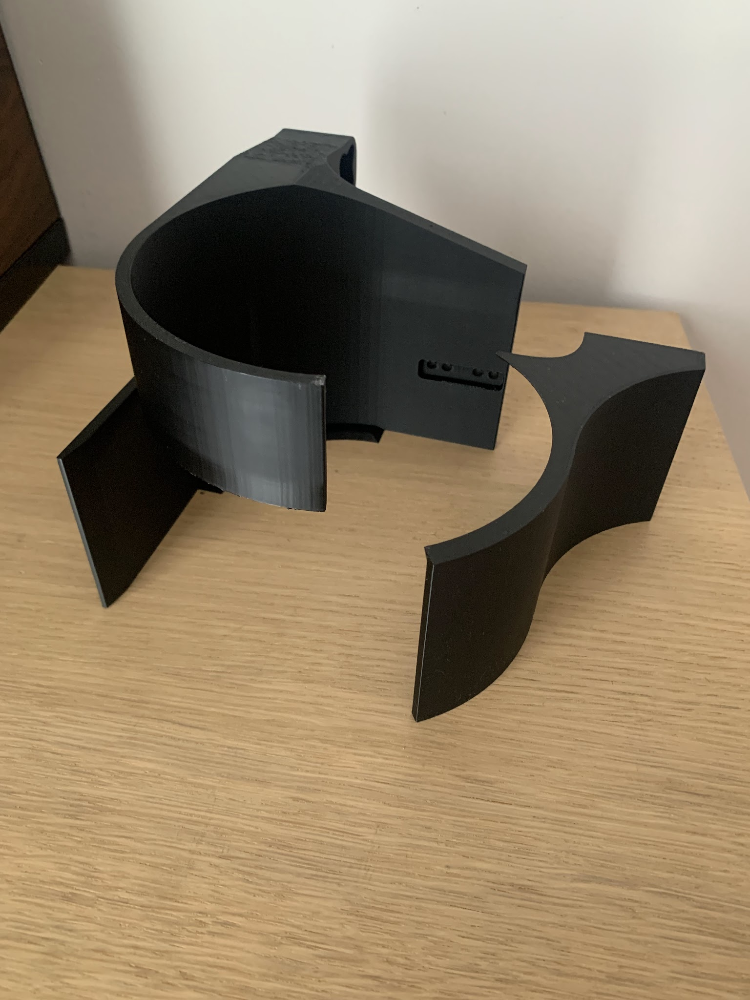
Claw Mechanism Issue
Our next roadblock came with the claw mechanism, we started of with the idea of using a very similar system to the vex pro claw but with custom 3d printed parts and attachments to make it work for us. Even though multiple prototypes, we were not able to find a practical way to incorporate all the functions we wanted.We then decided to switch to a more basic but practical system, the rack and pinion, which with a little bit of time were able to find a good 3d designed claw that would accomplish all our needs.
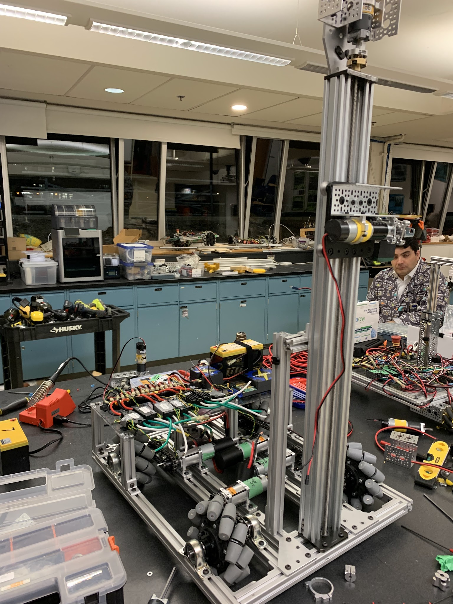

Testing & Driving
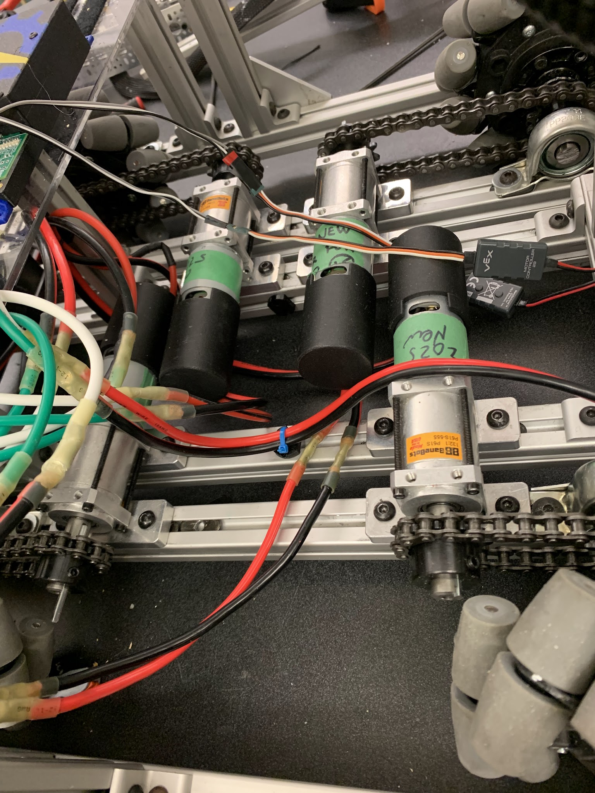
Another BaneBot Issue
The BaneBot drive system at first presented multiple issues, such as response time delay, response to certain code and also voltage drops.To solve this issue we went through many steps. Our first step was to redo all wiring connected to the motors including the speed controllers to rule out any wiring problems. We then updated and tweaked the code many times, still not resolving our issue 100%. Finally we tried connected all motor pins to one node on our terminal block reducing lag and delay but not fully solving the problem again.Finally we decided to switch to the gobilda yellow jacket bevel gear mechanism because of reliability reasons and lack of solutions to our BaneBot drive system. In the end the gobilda system truend out a lot better than the BaneBot system we had came up with.


Lauch System
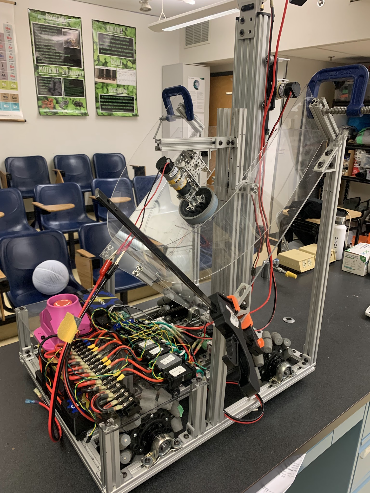
Launch Mechanism Issue
The launching mechanism that was designed at first came with a couple of issues, such as the underperformance of the flywheel because it was making contact with the plexi-glass under. Furthermore installing a perfect semi circle wall for the launcher cam with it’s difficulties.We were able to install a working plexiglass wall after 2 different tries. As for the flywheel problem, we changed the mounting method so that it would be more sturdy and create less vibrations across the robot. Finally, the suction effect that the high rpm fly would cause against the flywheel was simply resolved by cutting out a hole the size of the flywheel right under its original mounting position.